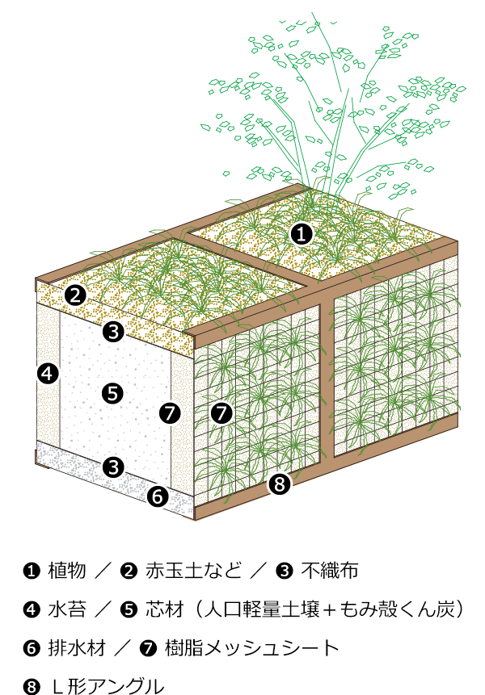
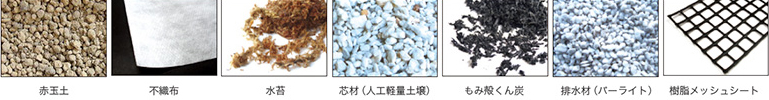
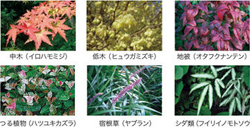
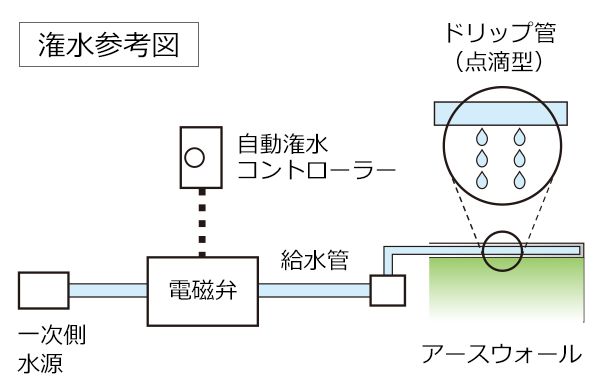

Bio Cube
人工的な建物に立体的なみどりの空間を創出することで
そこに季節の花や実などの彩りが添えられ、
訪れる生きものたちが都市生活に潤いを与えてくれます。
当社独自の立体型緑化工法である「バイオキューブ」は、
本来みどりとともにあるべき人と地域を優しい景観という絆で結びます。



自動潅水装置により水やりを制御します。季節ごとに適した水量、適した時間に潅水します。
また、点滴型のドリップ管を使用することで植物に安定した水量の潅水が可能になります。

集合住宅
集合住宅
商業施設
イベント装飾